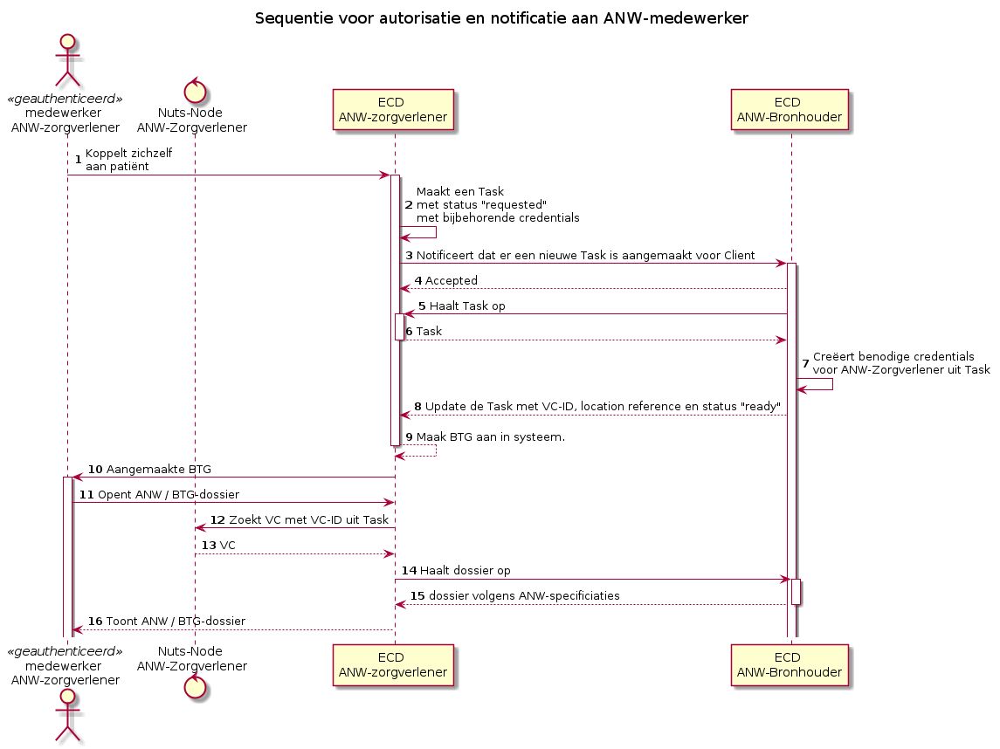

Netherlands - ANW implementation guide
0.1.0 - ci-build

Netherlands - ANW implementation guide
0.1.0 - ci-build

Netherlands - ANW implementation guide - Local Development build (v0.1.0) built by the FHIR (HL7® FHIR® Standard) Build Tools. See the Directory of published versions
Datum 15 April 2026
Breaking the glass (BTG) maakt het mogelijk dat een ANW-zorgverlener zichzelf tijdelijk toegang verleent tot de gegevens van een patiënt, zonder tussenkomst van een regisseur. Dit onderscheidt BTG van de reguliere ANW-flow: er is geen ANW-Regisseur betrokken en het proces verloopt uitsluitend tussen de ANW-Zorgverlener en de ANW-Bronhouder.
Net als bij de reguliere ANW begint BTG met een expliciete toestemming van de bronhouder aan de zorgverlener. Deze toestemming wordt eenmalig vastgelegd in een NutsAuthorizationCredential. Op basis van dit credential weet het systeem van de ANW-Zorgverlener bij welke bronhouders breaking the glass toegepast mag worden.
De ANW-Bronhouder geeft eenmalig een NutsAuthorizationCredential uit aan de ANW-Zorgverlener. Het primaire doel van dit credential is het toestaan dat de zorgverlener de patiënten van de bronhouder kan ophalen en doorzoeken, zodat de juiste patiënt geselecteerd kan worden voordat het BTG-autorisatieverzoek wordt ingediend. Daarnaast bevat het credential de toestemming om een notificatie te versturen naar de bronhouder als onderdeel van de BTG-flow.
Onderstaand de beschrijving van de relevante velden:
| Veld | Omschrijving |
|---|---|
credentialSubject.id |
Het DID van de ANW-Zorgverlener die gemachtigd is om BTG toe te passen. |
purposeOfUse |
Identificeert dit credential als een BTG-toestemming (BTG-Bronhouder-ZorgverlenerToegang). |
resources[].path |
Het FHIR-pad waarop de operatie is toegestaan, bijvoorbeeld voor het zoeken naar patiënten of het versturen van een notificatie. |
resources[].operations |
De toegestane FHIR-operaties op het opgegeven pad (search, create). |
resources[].userContext |
Geeft aan of de operatie een gebruikerscontext vereist. Bij BTG is dit true: bij het opvragen van de patiënten wordt de gebruikerscontext van de ingelogde zorgverlener meegestuurd, zodat de bronhouder de aanvraag aan een geïdentificeerde gebruiker kan koppelen. |
Voorbeeld NutsAuthorizationCredential:
{
"verifiableCredential": {
"@context": [
"https://nuts.nl/credentials/v1",
"https://www.w3.org/2018/credentials/v1",
"https://w3c-ccg.github.io/lds-jws2020/contexts/lds-jws2020-v1.json"
],
"type": [
"NutsAuthorizationCredential",
"VerifiableCredential"
],
"credentialSubject": {
"id": "did:nuts:{DID van ANW-Zorgverlener}",
"purposeOfUse": "BTG-Bronhouder-ZorgverlenerToegang",
"resources": [
{
"operations": [
"search"
],
"path": "/Patient?_query=anw-zorg-v2",
"userContext": true
},
{
"operations": [
"create"
],
"path": "/notification",
"userContext": false
}
]
},
"proof": {
"created": "2024-01-18T16:27:52.939738279+01:00",
"jws": "eyJhbGciOiJFU......",
"proofPurpose": "assertionMethod",
"type": "JsonWebSignature2020",
"verificationMethod": "did:nuts:Eb1U3ap94wcziQhUfZSW........"
}
}
}
Bij het ophalen van de patiënten door de ANW-Zorgverlener wordt gebruik gemaakt van de gebruikerscontext van de ingelogde zorgverlener. Deze context wordt meegestuurd met de FHIR-aanvraag zodat de bronhouder de aanvraag aan een geïdentificeerde gebruiker kan koppelen en de afhandeling daarop kan afstemmen.
Daarnaast worden bij het zoeken zoekparameters gebruikt zodat gericht op de betreffende patiënt gezocht kan worden in plaats van een volledige patiëntenlijst op te halen. Hierdoor wordt voorkomen dat onnodig brede sets met patiëntgegevens over de lijn gaan.
Tot slot wordt data-minimalisatie toegepast: de respons bevat alleen de velden die nodig zijn voor de patiëntselectie (bijvoorbeeld identifier, name en birthDate), waardoor niet de volledige Patient-resource over de lijn gaat. Deze beperking wordt server-side afgedwongen door de bronhouder als onderdeel van de named query, en niet via zoekparameters door de consumer. Hierdoor is de set met geretourneerde velden onderdeel van het contract van de query en kan deze niet door de consumer worden uitgebreid. Pas nadat het BTG-autorisatieverzoek is goedgekeurd, wordt op basis van het gegevensinzage-credential bredere patiëntdata opgehaald.
anw-zorg-v2Voor het zoeken naar patiënten in de BTG-flow wordt een nieuwe named query geïntroduceerd: anw-zorg-v2. Deze vervangt voor deze flow het gebruik van de bestaande ANW-zorg-query.
In anw-zorg-v2 worden aanvullende afspraken afgedwongen rondom:
family) en/of het BSN (identifier); minimaal één van beide moet worden meegegeven, maar ze mogen ook gecombineerd worden;Voorbeeld van een request:
GET /Patient?_query=anw-zorg-v2&family=Jansen&identifier=http://fhir.nl/fhir/NamingSystem/bsn|123456782 HTTP/1.1
Host: bronhouder.example.nl
Accept: application/fhir+json
De reden om hiervoor een aparte named query te introduceren in plaats van de bestaande query aan te passen, is dat het gedrag inhoudelijk afwijkt van de huidige ANW-zorg-query. Bestaande conversies en integraties zijn afhankelijk van het huidige gedrag; aanpassen daarvan zou kunnen leiden tot afwijkende responses, strengere filtering of gewijzigde logging, met impact op de huidige consumers.
Door een aparte query te introduceren:
De naam anw-zorg-v2 maakt daarnaast expliciet dat het om een nieuwe versie van het zoekgedrag gaat, zonder direct gekoppeld te zijn aan één specifieke consumer of implementatie.
Nadat de zorgverlener de juiste patiënt heeft geselecteerd, verloopt de BTG-flow zoals weergegeven in het onderstaande sequentiediagram. Omdat er geen regisseur aanwezig is, communiceert het systeem van de zorgverlener rechtstreeks met de bronhouder.

De BTG-flow maakt gebruik van een Task-resource die is afgeleid van de ANW-Task. De Task wordt door het systeem van de ANW-Zorgverlener aangemaakt en bij de ANW-Bronhouder ingediend als autorisatieverzoek.
Onderstaand de beschrijving van de relevante velden:
| Veld | Omschrijving |
|---|---|
code.coding[].code |
Identificeert dit verzoek als een BTG-autorisatieverzoek (BTG-autorisatie-verzoek). Hiermee kan de bronhouder onderscheid maken tussen een reguliere ANW-flow en een BTG-flow. |
for |
Verwijzing naar de patiënt voor wie toegang wordt gevraagd. |
authoredOn |
Tijdstip waarop het autorisatieverzoek is aangemaakt. |
requester.agent |
Het systeem of de organisatie van de ANW-Zorgverlener die het verzoek indient. |
requester.onBehalfOf |
De autoriserende partij (de bronhouder als data-eigenaar). |
owner |
De partij die toegang vraagt tot de gegevens. |
reason.text |
Verplicht veld waarin de zorgverlener de reden voor het BTG-verzoek toelicht. Dit is vrije tekst die door de gebruiker wordt ingevuld. |
restriction.period |
De periode waarvoor de tijdelijke toegang wordt gevraagd. |
restriction.recipient |
De zorgverlener die de toegang ontvangt. |
Voorbeeld FHIR Task:
{
"resourceType": "Task",
"id": "af10c4c8-bc4d-40c7-a335-fb63fe7158d3",
"meta": {
"profile": [
"https://nuts.nl/fhir/StructureDefinition/nl-core-authorization-request"
]
},
"intent": "order",
"code": {
"coding": [
{
"code": "BTG-autorisatie-verzoek"
}
]
},
"for": {
"reference": "Patient/{patientId}",
"display": "patient display name"
},
"authoredOn": "2024-01-23T13:23:42.1885689+00:00",
"requester": {
"agent": {
"identifier": {
"system": "http://nuts.nl",
"value": "{DID ANW-Zorgverlener}"
},
"display": "ANW-Zorgverlener A"
},
"onBehalfOf": {
"identifier": {
"system": "http://nuts.nl",
"value": "{DID authorizing party}"
},
"display": "Authorizing party C (data owner)"
}
},
"owner": {
"identifier": {
"system": "http://nuts.nl",
"value": "{DID accessing party}"
},
"display": "Accessing party B (data accessor)"
},
"reason": {
"text": "{verplichte toelichting van de zorgverlener}"
},
"restriction": {
"period": {
"start": "2024-01-23T14:23:42.2264869+01:00",
"end": "2024-01-26T13:23:42.2295674+00:00"
},
"recipient": [
{
"reference": "Practitioner/{practitioner with access Id}",
"display": "anw practitioner display name"
}
]
}
}
De BTG-Task verschilt op twee punten van de ANW-Task:
code - De code BTG-autorisatie-verzoek onderscheidt dit verzoek expliciet van een regulier ANW-autorisatieverzoek. De bronhouder gebruikt deze code om de juiste verwerkingslogica toe te passen.reason.text - Dit veld is bij de BTG-Task verplicht. Waar het veld bij de reguliere ANW-Task wordt gebruikt voor instructies, bevat het hier een door de gebruiker ingevulde toelichting op de reden voor het toepassen van breaking the glass.Nadat de bronhouder het BTG-autorisatieverzoek heeft verwerkt en goedgekeurd, geeft de bronhouder een NutsAuthorizationCredential uit voor de betreffende patiënt. In dit credential wordt de purposeOfUse ingesteld op BTG-Bronhouder-Gegevensinzage. Hierdoor is voor alle betrokken partijen expliciet zichtbaar dat de toegang is verleend in het kader van breaking the glass en niet via de reguliere ANW-flow.
Voorbeeld NutsAuthorizationCredential gegevensinzage:
{
"verifiableCredential": {
"@context": [
"https://nuts.nl/credentials/v1",
"https://www.w3.org/2018/credentials/v1",
"https://w3c-ccg.github.io/lds-jws2020/contexts/lds-jws2020-v1.json"
],
"type": [
"NutsAuthorizationCredential",
"VerifiableCredential"
],
"credentialSubject": {
"id": "did:nuts:{DID van ANW-Zorgverlener}",
"purposeOfUse": "BTG-Bronhouder-Gegevensinzage",
"resources": [
...
]
},
"proof": {
"created": "2026-04-29T15:39:46.873044983+02:00",
"jws": "eyJhbGciOiJFU......",
"proofPurpose": "assertionMethod",
"type": "JsonWebSignature2020",
"verificationMethod": "did:nuts:Eb1U3ap94wcziQhUfZSW........"
}
}
}